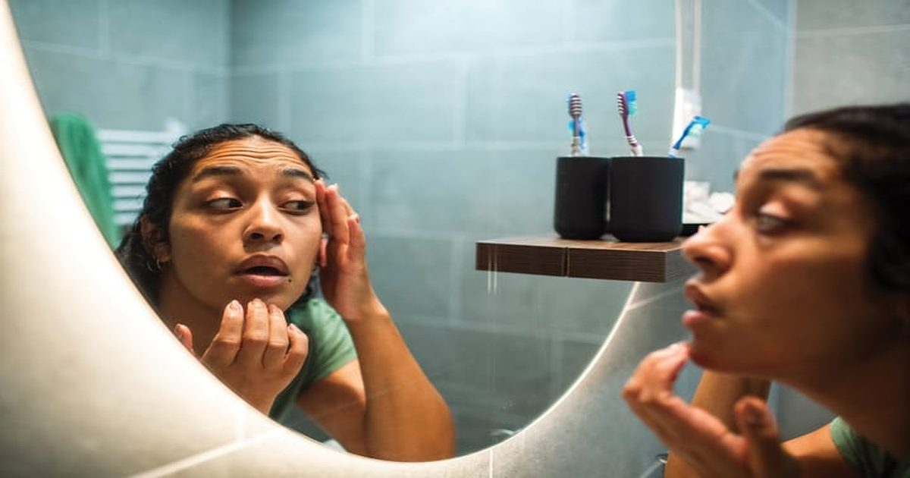

Психоэстетическая перезагрузка: почему эстетическая медицина выходит за зеркало
Статья рассматривает, почему современная эстетическая медицина не может ограничиваться только визуальными изменениями и должна учитывать психологическое состояние пациента. Интеграция ментального здоровья в протоколы лечения повышает предсказуемость результатов и снижает риск повторных вмешательств.
Связь психического состояния и восприятия внешности
В современной эстетической практике всё чаще замечается, что результат процедуры зависит не только от технического исполнения, но и от внутреннего состояния пациента. Стресс, тревога и нереалистичные ожидания могут искажать восприятие собственного образа и снижать удовлетворенность даже после качественных манипуляций.
Исследования в области психодерматологии показывают, что кожа реагирует на нейромедиаторы, выделяемые при эмоциональном напряжении, что может усугублять воспаление, сухость или пигментацию. Учет этих механизмов позволяет врачу выбирать более мягкие протоколы и корректировать план лечения под психологический профиль клиента.
Поэтому первичная консультация должна включать не только анализ кожи, но и краткий опрос о уровне стресса, качестве сна и отношении к собственной внешности. Такой подход формирует реалистичные цели и снижает риск повторных вмешательств, вызванных неподвижностью ожиданий.

Роль коммуникации врача и пациента в планировании процедур
Эффективное взаимодействие врача и пациента строится на принципе информированного согласия, где обсуждаются не только технические детали, но и возможные эмоциональные реакции. Четкое объяснение этапов процедуры, времени восстановления и вероятных ощущений снижает тревожность и повышает доверие.
Когда специалист выслушивает страхи и предпочтения клиента, он может адаптировать интенсивность воздействия, предложить альтернативные методики или рекомендовать предварительную релаксацию. Индивидуализированный диалог превращает процедуру из чисто технического акта в совместный процесс заботы о комфорте.
Кроме того, документирование ожиданий и согласований в карте позволяет отслеживать динамику восприятия результата во времени. При необходимости корректировки плана у врача есть опора на зафиксированные изначальные цели, что делает последующие консультации более конструктивными.

Интеграция психологической поддержки в клиническую практику
Внедрение психологической поддержки в клинику может осуществляться через короткие сессии когнитивно‑поведенческой терапии, тренинги осознанности или реферальную схему к специалисту по телемедицине. Такие форматы не требуют длительного пребывания пациента в учреждении и сохраняют конфиденциальность.
На практике показано, что пациенты, прошедшие предпроцедурную психологическую подготовку, реже сообщают о дискомфорте, отеках или гиперчувствительности в постоперационный период. Снижение уровня кортизола способствует более равномерной регенерации тканей и уменьшению риска гиперпигментации.
Для внедрения такого модуля достаточно согласовать протокол взаимодействия между дерматологами, косметологами и психологами, определить критерии отбора пациентов и зафиксировать результаты в единой истории болезни. Системный подход делает психологическую помощь недобровольной добавкой, а стандартом качества.
Перспективы развития мультидисциплинарного подхода
Перспективы развития эстетической медицины лежат в создании мультидисциплинарных центров, где дерматология, пластическая хирургия, неврология и психология работают в едином информационном поле. Обмен данными в реальном времени позволяет своевременно корректировать лечебные стратегии.
Технологические решения, такие как цифровые платформы для отслеживания настроения, качества сна и уровня стресса, могут интегрироваться в приложения клиник. Пациент получает персонализированные рекомендации по уходу и режиму до визита, что повышает предсказуемость результата.
В долгосрочной перспективе такие экосистемы способствуют формированию доказательной базы, подтверждающей связь психологических факторов с клиническими исходами. Накопленные данные станут основой для новых протоколов, где эстетика и ментальное здоровье рассматриваются как единый континуум.
Коротко: Учет психоэмоционального фона становится обязательным этапом планирования любой эстетической процедуры. Мультидисциплинарный подход и цифровые инструменты позволяют сделать уход за кожей более безопасным и эффективным.
Как вы считаете, должна ли клиника предлагать психологическую поддержку перед эстетическими процедурами?